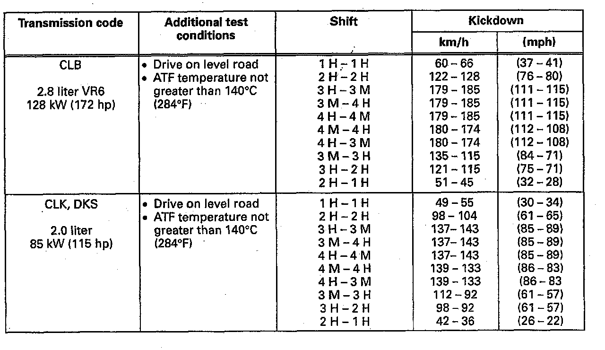
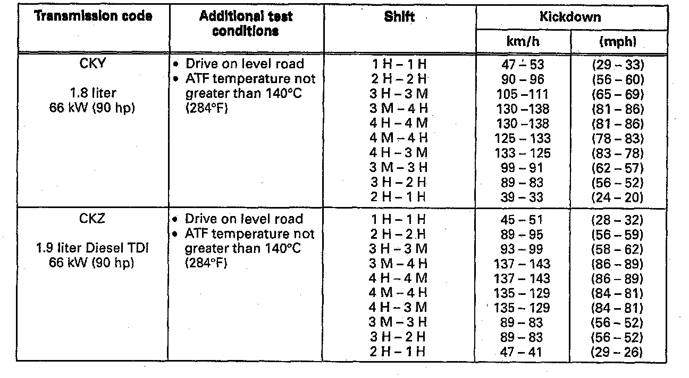

Checking Shift Points
NOTE:
The automatic transmission is only to be checked after having first completed the On Board Diagnostic and if the cause of damage cannot be located and corrected.
TEST REQUIREMENTS
- Conduct On Board Diagnostic (OBD)
Activate Diagnostic Trouble Code (DTC) Memory
- Check engine adjustment.
TRANSMISSION SHIFTS TOO EARLY OR TOO LATE INTO THE NEXT GEAR
NOTE: When checking the shift points note that the speedometer can deviate within the permissible tolerances from the specified value.
- The charts below list the shift points based on transmission code.
H = Hydraulic shifting
M = Mechanical shifting
- To test the shift points, connect VAG 1551 or equivalent, Scan Tool to the On Board Diagnostic (OBD) connector, access Reading Test Value Block
SHIFT POINTS IN KM/H (MPH)
Shift Point Table, By Engine Code (Part 1 Of 2):

Shift Point Table, By Engine Code (Part 2 Of 2):

NOTE: During the warm up period, with hot ATF, up-hill or down-hill drives the shift points depending on the drive situation, and are automatically changed by the control module